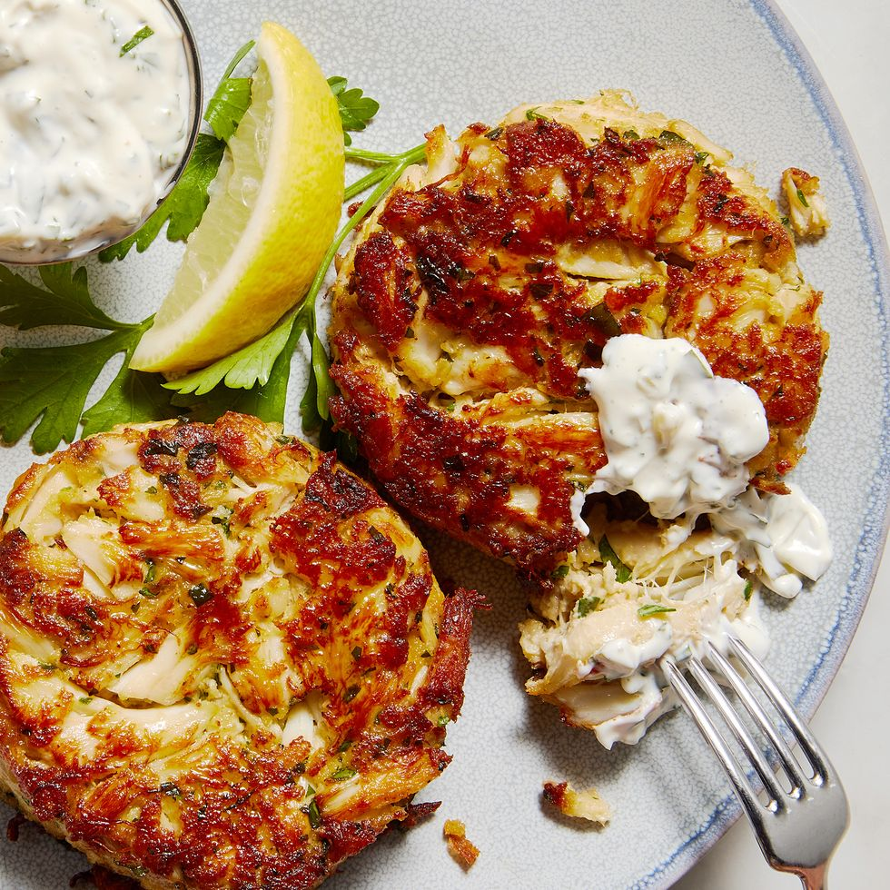

Crabcake Recipe

A fancy seafood restaurant staple, fresh crab cakes can bring to mind summer days and seaside escapes. We recognize that for some, crab cakes are more of a way of life than simply a classic summer dinner. Our perfect crab cake recipe is everything you could ever want: It’s buttery, full of fresh crab flavor, golden and crispy, and served with our homemade tartar sauce. Ready in 30 minutes, these cakes are the perfect easy dinner or impressive appetizer if you’re looking for a restaurant-worthy meal to impress (without the effort). Here’s everything you need to know:
Ingredients
- 1 large egg, beaten to blend
- 1/3 c. mayonnaise
- 2 tbsp. Dijon mustard
- 2 tsp. Worcestershire sauce
- 1/2 tsp. hot sauce
Steps
- In a small bowl, whisk egg, mayonnaise, mustard, Worcestershire, and hot sauce; season with salt and pepper.
- In a medium bowl, mix crabmeat, panko, and parsley. Fold in egg mixture, then form into 8 patties.
- In a large skillet over medium heat, coat pan with oil and heat until shimmering. Working in batches and adding more oil if needed, cook crab cakes, turning once, until golden and crispy, 3 to 5 minutes per side.
- Transfer crab cakes to a platter. Serve with lemon wedges and tartar sauce alongside.